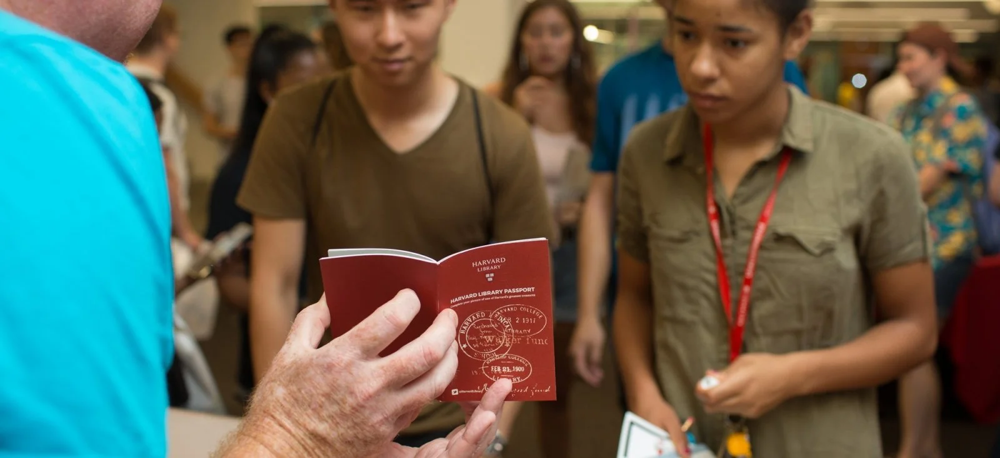
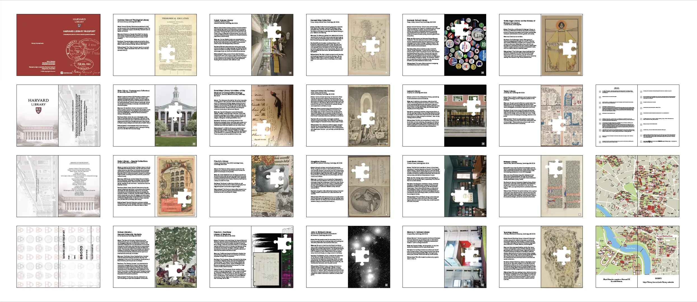
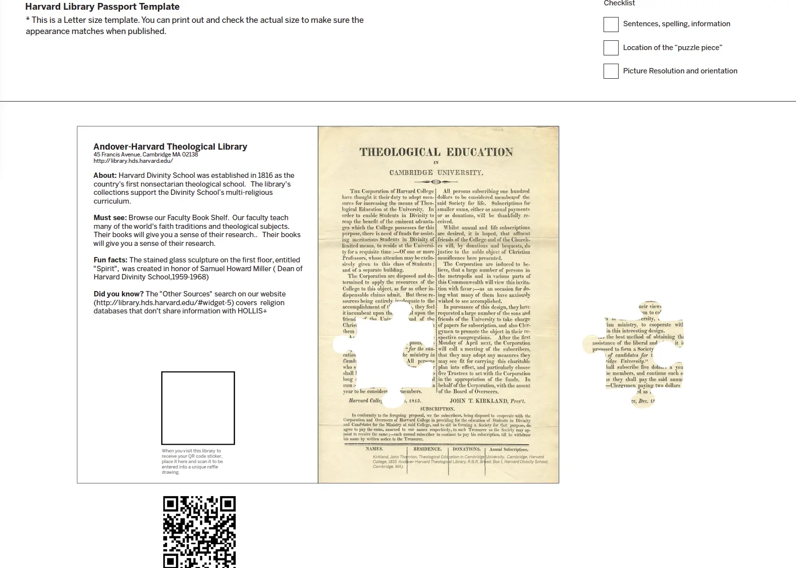
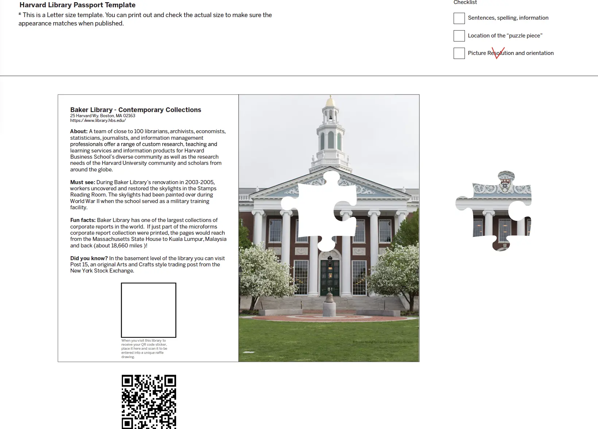
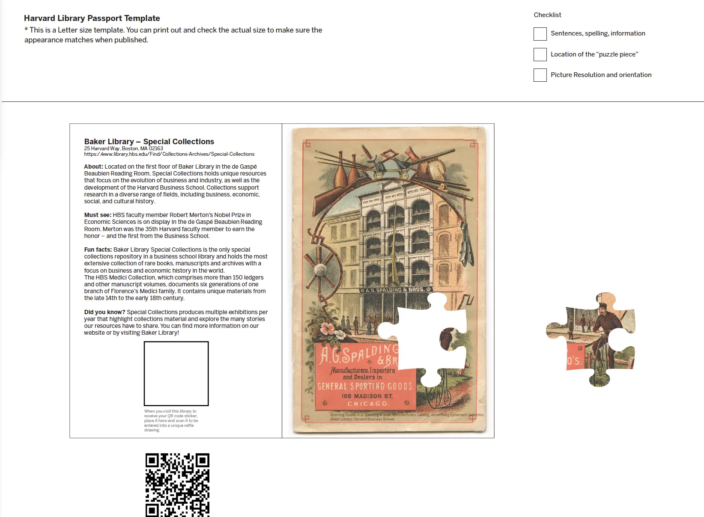
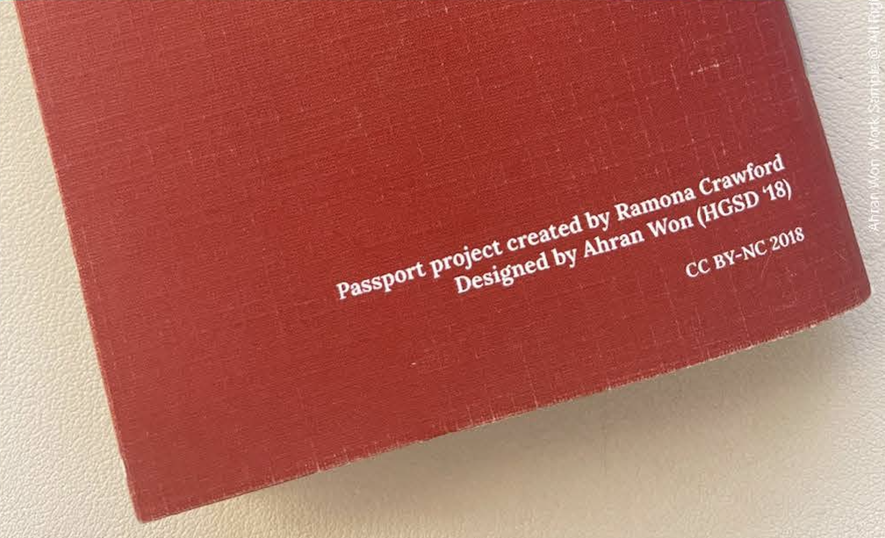
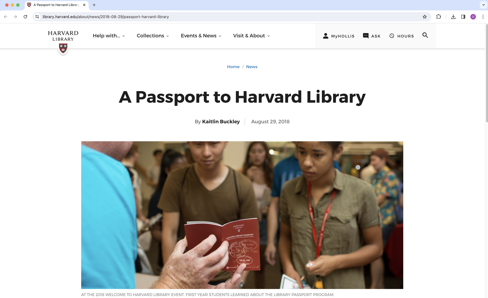
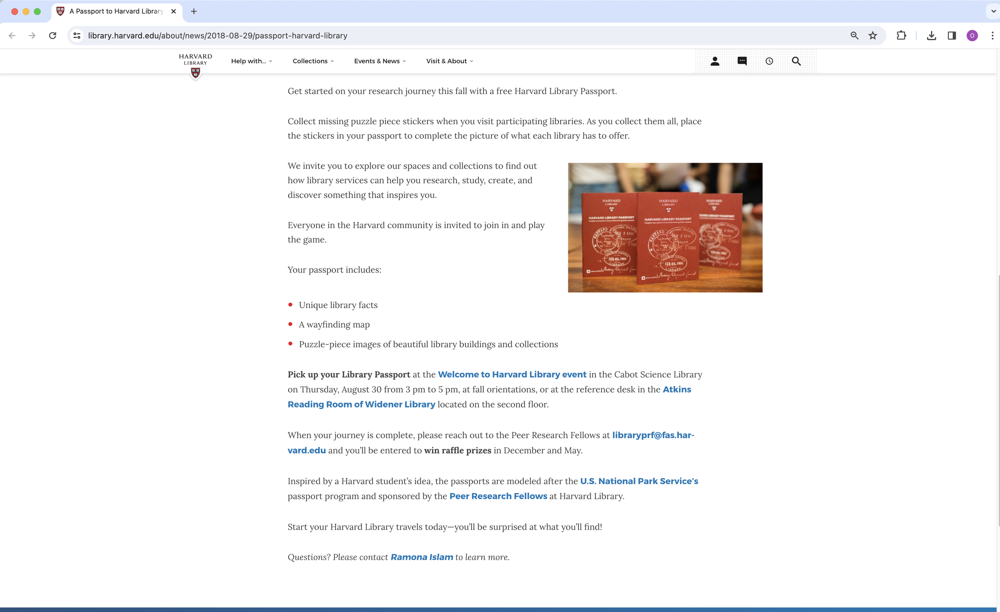

Passport to the Harvard Libraries
Turning a library system into somewhere to travel.도서관을 찾아볼 곳으로 바꾸기.

- Client
- Harvard University
- Location
- Cambridge, Massachusetts
- Year
- 2017
- Role
- Designer
- Scope
- Identity and print design
The brief. Harvard’s libraries are spread across the university; the aim was to get students out to visit them.
The idea. A passport that encourages students to visit libraries across the university, turning the library system into somewhere to travel.
What I did. The identity and print design: the passport itself and a page for each library, with its story, an image, a puzzle piece and a QR code.
과제. 하버드의 도서관은 학교 곳곳에 흩어져 있습니다. 학생들이 직접 찾아가 보게 만드는 것이 목표였습니다.
아이디어. 학교 곳곳의 도서관을 찾아가게 만드는 여권. 도서관 시스템을 여행할 수 있는 곳으로 바꿨습니다.
역할. 아이덴티티와 인쇄물 디자인. 여권 자체와, 도서관마다 소개·이미지·퍼즐 조각·QR 코드를 담은 페이지.
Design디자인
A page for every library도서관마다 한 페이지
Each library gets its own spread: its story, an image with a missing puzzle piece, and a QR code.도서관마다 한 장: 소개, 퍼즐 조각이 빠진 이미지, 그리고 QR 코드.




Print인쇄
The passport여권
The finished passport, bound in red cloth.붉은 표지로 제본된 완성된 여권.

Press반응
In the Harvard Library news하버드 도서관 소식에
The passport featured by Harvard Library.하버드 도서관이 소개한 여권.

